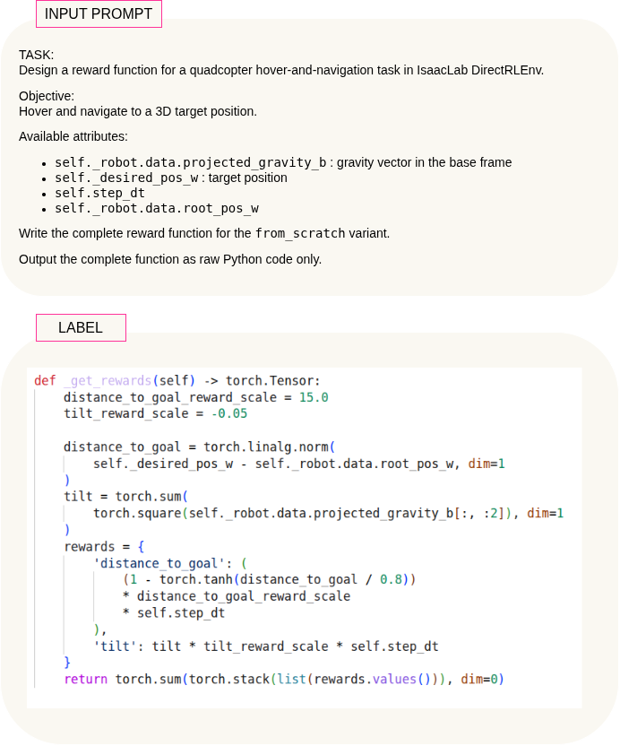
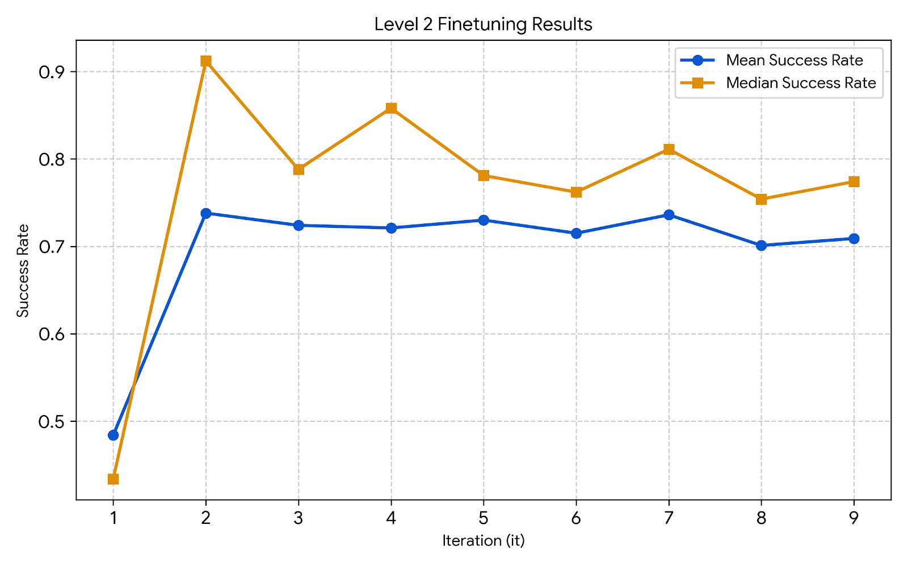
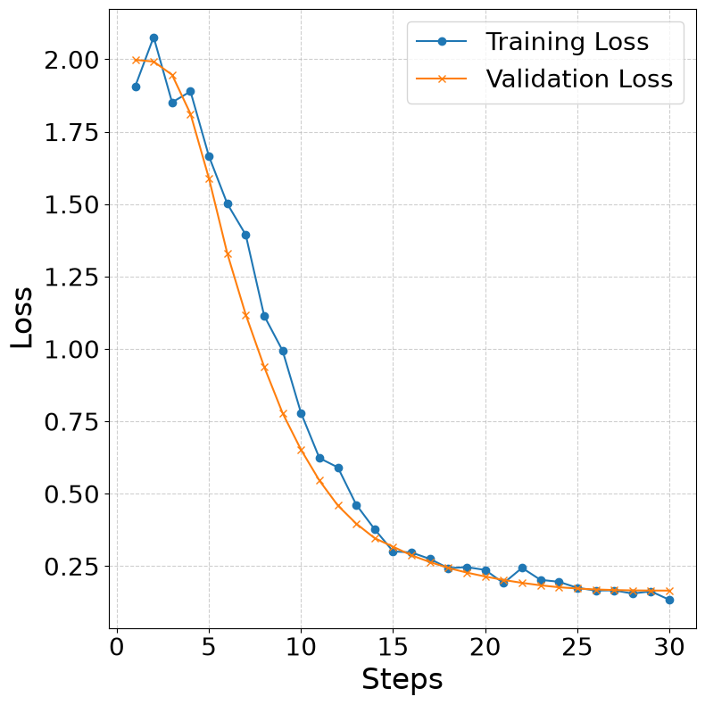

A policy is bounded by the scalar signal a designer writes for it, and that signal must be re-derived by hand for every task and every assumption about the environment, which is the least automated and most consequential step in reinforcement learning. Code-capable language models can draft such a reward, but their proposals fail in three distinguishable ways - not extractable, unsound, or an interface violation, and each needs a differently priced remedy. We treat reward design as constrained code generation: a three-stage validator turns free-form output into an executable reward with a categorical, prompt-repairable failure code, and only valid code reaches success-rate scoring, whose outcome returns as preferences. The interface is declared per environment rather than fixed by signature, and one permissively released open-source code model is adapted in two stages that are trained separately and have not yet been combined. Our end goal is an agent that flies a quadcopter in Isaac Lab on a model-written reward; we report what has been measured so far, and what remains untested, including the policy-training ground truth that would confirm our proxy.
The pipeline runs as a continual loop: an LLM drafts reward code, a validator gates it, valid candidates are scored, and the results feed back as preference pairs for DPO training.
The main loop: the LLM drafts candidate reward code, a three-stage validator gates it, valid rewards are scored by a fast proxy success rate under a fixed reference policy, and the resulting preference pairs train the generator with direct preference optimization (DPO). A semantic reflection channel summarizes the elite solution to guide the next iteration.
| Stage | Question | Failure code |
|---|---|---|
| C1 · Extractability | Is there a program at all? | no_code_block |
| C2 · Static safety | Well-formed, terminating, side-effect-free? | missing_entry_point, forbidden_import, self_attr_access, loop_detected, forbidden_builtin, too_similar_to_reference |
| C3 · Runtime check | Returns the declared type against the declared attributes? | runtime_call_failed, not_a_tensor, shape_mismatch, nonfinite_output, dim_out_of_range |
Valid candidates are scored by a fast proxy success rate under a fixed reference policy in LunarLander-v3. The ordering becomes preference pairs that train the generator with DPO, alongside a semantic reflection channel summarizing the elite solution.
| Model | Repair | Accept | Rate |
|---|---|---|---|
| Base Qwen2.5 Coder 7B | no | 134 | 13.4% |
| Base Qwen2.5 Coder 7B | yes | 672 | 67.2% |
| Finetuned Qwen2.5 Coder 7B | no | 823 | 82.3% |
| Finetuned Qwen2.5 Coder 7B | yes | 836 | 82.9% |
| Iter | Valid% | Mean Success Rate | P20 | DPO Pairs |
|---|---|---|---|---|
| 1 | 16.1 | 0.484 | 0.178 | 96 |
| 2 | 21.5 | 0.738 | 0.483 | 130 |
| 3 | 44.3 | 0.724 | 0.520 | 268 |
| 4 | 44.3 | 0.721 | 0.474 | 268 |
| 5 | 23.3 | 0.730 | 0.521 | 142 |
Fine-tuning raises unaided acceptance from 13.4% to 82.3% and eliminates the coarse type/shape failures that dominated the base model. The repair channel is worth most where the backbone knows least: +53.8 points to the base model, +0.6 to the fine-tuned one. Over five DPO iterations the mean success rate rises from 0.484 to 0.730 and the worst-20% quantile from 0.178 to 0.521.